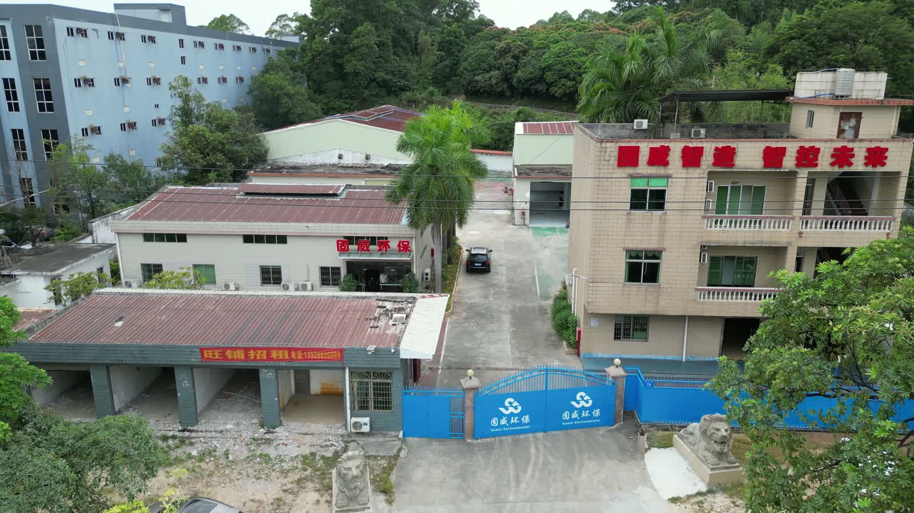
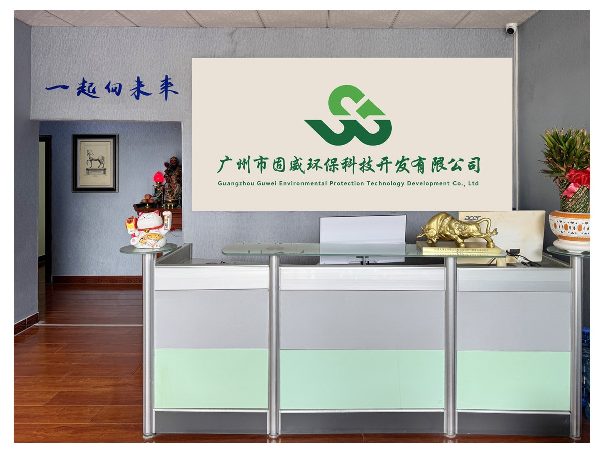

固威环保广州市固威环保科技开发有限公司
固威环保广州市固威环保科技开发有限公司

设备制造
水处理、海水淡化及玻璃钢容器等设备的制造与配置。
广州市固威环保科技开发有限公司成立于 2015 年，位于广州市增城区，制造基地位于中新镇福中路 76 号。
业务覆盖水处理及海水淡化设备研发与制造，并提供电气控制系统设计、控制柜组装、PLC 与触摸屏编程及现场安装调试服务。


服务领域包括环保、电子、化工、制造、新能源及自动化。项目沟通可从水质、水量、现场条件与电气控制需求开始，具体供货与实施范围通过技术资料确认。
根据项目的水质、水量、现场接口与控制需求，组织设备和电气工作的衔接。
水处理、海水淡化及玻璃钢容器等设备的制造与配置。
控制柜设计组装，PLC 与触摸屏程序编制。
安装调试与售后维护，具体交付范围按项目约定。